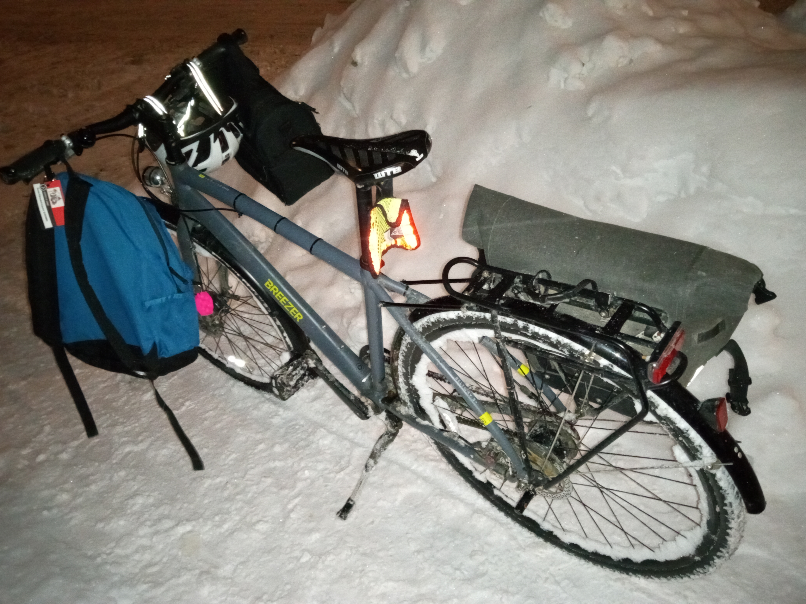

Cargo capacity is easy to be looked over when first starting biking. However, it makes a big difference in the possible ways the bicycle can be used, such as shopping around or simply to carry items for daily use. At first, many people will be tempted to use a backpack. This works but backpacks put strain on shoulders and generate sweat. Who likes to arrive at destination with a wet shirt?
Quand on commence à faire du vélo, on néglige facilement la capacité de chargement. Pourtant, elle change beaucoup les façons dont on peut utiliser son vélo, que ce soit pour magasiner ou simplement pour transporter ses affaires au quotidien. Au début, bien des gens sont tentés d'utiliser un sac à dos. Ça fonctionne, mais un sac à dos tire sur les épaules et fait transpirer. Qui aime arriver à destination avec une chemise trempée ?
It is important to invest in a good luggage rack and quality bags. My waterproof Arkel bags allow carrying a laptop, clothes, a cell phone, a chain, emergency tools and more, safely.
Il est important d'investir dans un bon porte-bagages et des sacoches de qualité. Mes sacoches imperméables Arkel me permettent de transporter en toute sécurité un ordinateur portable, des vêtements, un cellulaire, une chaîne, des outils de dépannage et plus encore.
For daily trips to work, this is usually all the gear I need. It all fits in a single bag, which I find more convenient than two bags to carry around and it leaves one side of the bike free of obstacles. It might be a silly point, but I find that this makes it easier to hop on and off the bike without hitting the bag, as long as it is installed on the right side (which happens to be the right-hand side in my case).
Pour mes trajets quotidiens vers le travail, c'est généralement tout ce dont j'ai besoin. Tout entre dans une seule sacoche, ce que je trouve plus pratique que d'en trimballer deux, et ça laisse un côté du vélo libre. C'est peut-être un détail, mais je trouve que ça facilite les montées et descentes du vélo sans accrocher la sacoche, à condition qu'elle soit installée du bon côté (qui se trouve à être le côté droit dans mon cas).
I mainly use two bags when doing groceries or carrying stuff to the recycling center, such as empty bottles that have been piling up in the basement. For anything larger, I have a trailer which I got second-hand. I have used it to carry a microwave, cedars, skis and more. In all cases, I have always been impressed by how easy it was to pull these items. The most challenging part is finding quiet routes as I feel less confident in the traffic with a trailer.
J'utilise surtout deux sacoches pour faire l'épicerie ou pour apporter des choses au centre de recyclage, comme les bouteilles vides qui s'accumulent au sous-sol. Pour ce qui est plus gros, j'ai une remorque achetée usagée. Je m'en suis servi pour transporter un micro-ondes, des cèdres, des skis et plus encore. Chaque fois, j'ai été impressionné de voir à quel point c'était facile à tirer. Le plus difficile, c'est de trouver des trajets tranquilles, parce que je me sens moins en confiance dans la circulation avec une remorque.
We are a family of five. Anyone who tells you they "need" an SUV to carry their goods around is delusional.
Nous sommes une famille de cinq. Quiconque vous dit qu'il a « besoin » d'un VUS pour transporter ses affaires se fait des illusions.
When picking up our children from their school which is a few blocks from home, I'll often arrive from work on my bike and then walk it with the children, using it as a mule on which I will hook their backpacks and lunchboxes, fitting other smaller items in my pannier bags.
Quand je vais chercher nos enfants à leur école, à quelques coins de rue de la maison, j'arrive souvent du travail à vélo, puis je marche à côté avec les enfants en m'en servant comme d'une mule : j'y accroche leurs sacs d'école et leurs boîtes à lunch, et je glisse les plus petits objets dans mes sacoches.
When the kids were smaller we were using a Thule chariot to carry them to and from daycare. The chariot was super convenient and could also be converted on the fly into a stroller. This was a useful feature as I could hitch them in the morning and my wife was walking them back home in the evening.
Quand les enfants étaient plus petits, on utilisait un chariot Thule pour les amener à la garderie et les ramener. Le chariot était super pratique et pouvait aussi se transformer en poussette en un rien de temps. C'était bien utile : je les attelais le matin, et ma femme les ramenait à pied le soir.
